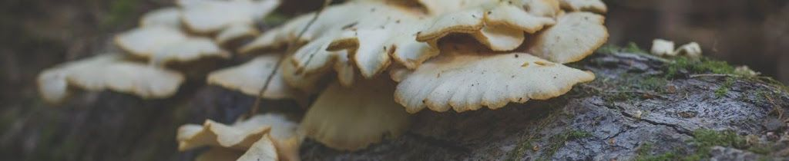

Emily Adamczyk
Treasurer and Marine Ecology Research Director

Emily found her passion for ecology while growing up in the foothills of the San Gabriel mountains in Southern California. Her curiosity about the natural world led her to complete her B.S. and M.S. in Biology from the University of California, San Diego. Emily’s interest in coastal ecosystems prompted a northward move to Vancouver, BC, where she earned her Ph.D. in Zoology at the University of British Columbia. Her thesis focused on understanding the effects of human activities, space, and time on eelgrass-associated invertebrate and microbial diversity.
Emily enjoys sharing her love for nature with others and teaching science to folks of all ages. She believes education and community engagement are at the core of implementing effective and long-lasting management of coastal ecosystems. She is thrilled to share her personal objectives with IMERSS: science is for everyone. As Chair of the Board of Directors, Emily aims to promote collaborations and effectively guide projects through completion.
Johnny Aitken
Indigenous Creative Director

Johnny is an actor, scriptwriter, writer, carver, filmmaker, educator and activist. His mixed ancestry includes Coast Salish, Scottish, Haida and Hawaiian. Johnny, self identifies as a gay 2Spirit First Nations Interdisciplinary Artist.
As a wood carver, Johnny’s highlight has been carving a twenty-foot figure called a Honouring Figure which is based on a traditional Coast Salish Welcome Figure.
Johnny’s love of performing on stage began while dancing with Lynda Raino back in the 1980s in Victoria B.C. Johnny is currently co-writing a series of children’s books with his friend Jess Willows which has a focus on reconciliation and friendship. He is also of writing his first novel which explores his complicated mixed lineage, titled “Mixed-up!”.
Johnny considers himself a cross cultural bridge builder, a lifetime occupation he takes very seriously with a lot of humour! Johnny joined the IMERSS Team in 2021.
Dana Ayotte
Inclusive Designer

Dana Ayotte is a Senior Inclusive Designer at the Inclusive Design Research Centre at OCAD University, where she collaborates with a team of designers, developers and others working to make digital technology more inclusive, equitable and accessible to all. After many visits to Galiano Island the natural beauty drew her in and she decided to stay for a while, during which time she volunteered with the Galiano Conservancy and was involved with the Biodiversity Galiano project. Learning about the local biodiversity fuelled her passion for ecological protection and restoration and so began her work on the Xetthecum Digital Ecocultural Mapping project where she contributes to the design of the mapping tool. Dana is an artist with a practice that often addresses themes of nature and the environment. Her work is interdisciplinary and includes printmaking, textiles, drawing and installation, with a focus on using repurposed materials and Earth-sustaining practices. Dana is grateful to live and work on the unceded territory of the Coast Salish peoples also known as Vancouver, BC. Most days she can be found walking her dog in the forest. She is honoured to be a part of the IMERSS community!
Antranig Basman
Biodiversity Informatics Lead

Antranig’s principal current interest is creating data infrastructures that can be effectively owned by their communities. Today’s corporate governance infrastructures have effectively created a digital feudalism where citizens, grassroots groups and in particular marginalised people of all kinds are excluded from decision-making and ownership of the technological means needed in their everyday lives. Antranig participates in schemes to create inclusive, pluralistic infrastructures which are respectful of multiple modes of knowledge, including Indigenous cultures, community scientists, semi-professional scientists and others.
An umbrella for some of this work is the Knitting Data Communities page at Lichen Community Systems.
Interests: JavaScript, inclusive and feminist data science, ecocultural mapping, machine learning techniques, genetic algorithms, statistical techniques. Older interests: C++, Java, cryptography.
Hannah Carpendale
Secretary

As a science communicator/data-driven storyteller and performance artist, Hannah merges a deep commitment to environmental and social justice with a passion for creative expression.
For many years, she worked with the Ancient Forest Alliance facilitating community outreach, communication and research in support of old-growth forest protection and sustainable forestry practices.
Hannah has also collaborated on a number of interdisciplinary projects, including the ecological dance film Verge: Dancing a Scarred and Sacred Landscape and site-specific performance Water Bodies. She is currently exploring ways of engaging with climate change through contemporary circus arts.
In her PhD research at Simon Fraser University’s Imaginative Methods Lab, Hannah is exploring creative avenues for fostering critical data literacies surrounding biodiversity loss and climate change as part of her project Forest Carbon Futures. Alongside this work, Hannah collaborates with the Hummingbird Collective to co-create materials that merge ecology, art and design to counter misinformation and empower local communities toward ecological, climate and community resilience.
With IMERSS, Hannah enjoys sharing tools and insights across disciplines, finding new ways to support the diverse communities of the Salish Sea bioregion.
Jeannine Georgeson
Xetthecum Project Manager

Jeannine Georgeson is Coast Salish and Sahtu Dene. Galiano Island has been her home for most of her life.
When her son Austin became involved with Biodiversity Galiano, his learning reminded her of what she was taught by her grandparents growing up. She was intrigued by the complementary aspects of Indigenous knowledge and ecology, so when she learned of IMERSS and the collaboration with Indigenous-led nonprofit Whiteswan Environmental, she was in awe! It folded together many of her values and interests—biodiversity, cultural importance of place and species, preservation of knowledge for future generations, action against climate change, community engagement and participation, and transboundary connections. It was these shared diverse interests that led to her engagement with IMERSS and other regional initiatives.
Jeannine plays a dynamic role in IMERSS, co-leading the Xetthecum ecocultural mapping pilot project, supporting the Hakai Sentinels of Change monitoring program, and coordinating the organization’s strategic operations.
Jeannine lives with her partner Laurie and two of her three children, plus their cats Lilo and Stitch, Cronk the bearded dragon, Pug the Pug, some fish, as well as Austin’s collection of ants and a couple of spiders. Reading is one of her favourite hobbies. She feels most at peace when near the water, relaxing or exploring.
Elaine Humphrey
Director

While pursuing her PhD in Biological Oceanography, Elaine was introduced to Electron Microscopy. She now works at UVic in one of the world’s leading electron microscopy labs which is open to every discipline.
The whole of the biological, chemical and physical world is of interest to Elaine, especially in how they overlap. She views the living world as an astonishing, wonderful place. One of her mandates is to get more science into elementary and middle schools and provide support to teachers—a large percentage of whom come from an arts background.
Elaine’s master’s degree included a benthic meiofaunal investigation of an intertidal zone, and it was an open research project for Galiano. Sorting and identifying organisms is an intensive undertaking, and she needed help. What better way than to make it a citizen science project through IMERSS? She has ongoing research projects with IMERSS such as s study of the biodiversity of diatoms in the Salish Sea led by Mark Webber.
Alysha T. Jones
Director

Alysha (she/her) is a nurse educator, community health nurse, and planetary health advocate, focusing on human health linked with Earth’s natural systems. What’s closest to her heart is advocating for biodiversity. She is co-chair of the Environmental Justice Committee for the Canadian Association of Nurses for the Environment. Centred on health equity, Alysha’s nursing roles have been diverse, including harm reduction, gender-affirming care, and primary care in remote Indigenous communities in northern BC. She worked on Galiano Island in Canada’s first publicly funded residential program for older youth with eating disorders and developed a weekly nature-based mindfulness group for residents.
Alysha has an MSc in Holistic Science from Schumacher College in the UK and an MScN from the University of Northern BC. At UNBC, she has co-created and co-taught one of Canada’s few nursing courses on planetary health and environmental justice. Alysha is pursuing a diploma in Restoration of Natural Systems at the University of Victoria, aiming to practice ecological restoration as planetary health promotion.
As a white settler, Alysha is committed to solidarity with Indigenous-led decolonization and conservation. She lives in Sooke, BC, on the territory of the T’Sou-ke and Sc’ianew Nations.
Andrew Simon
Chair

A biologist with over a decade of experience studying British Columbia’s interior and coastal ecosystems, Andrew’s passions lie at the intersection of natural history, community-based research, and biodiversity data science. Beginning with an apprenticeship to lichenologist Trevor Goward, his studies have since progressed through a dynamic career in the environmental sciences, working with NGOs, First Nations, academe, industry and government. Currently, he is collaborating with the Átl’ka7tsem/Howe Sound Biosphere Region Initiative to develop a biodiversity assessment framework, while pursuing a PhD studying lichen symbioses in the Spribille Lab at the University of Alberta.
Andrew is perhaps most well recognized for his commitments to community-based biodiversity research as the curator of the Biodiversity Galiano project, for which he was recently recognized with an Islands Trust Community Stewardship Award. Symbiosis is the notion that inspired his love of natural history to begin with, and it is this notion that continues to inspire his local and regional commitments to community science.
You can learn more about Andrew’s work on his personal website.
Ruth Waldick
Director

Since the beginning, Ruth’s research has focussed on ecology and the interactions of human activities on the environment. In 2003, this naturally led to her work on climate change, its impacts, and how to adapt. She earned her Master’s of Biology at Dalhousie University, focussing on impacts of silvicultural practices on amphibians. She then turned her attention to endangered animals, using population genetics to explore impacted populations, completing her PhD at McMaster University followed by Postdoctoral Studies at Cambridge University.
Currently, Ruth is leading a study in the Gulf Islands on climate change, fire and the ecology of our Coastal Douglas-fir ecosystems. She helped incorporate climate adaptation into the Salt Spring Island Climate Action Plan, and is a Director with Transition Salt Spring. Ruth loves talking with others about our shared home. She is passionate about what we can do when we work together. So, don’t hesitate to speak with her. Ruth is committed to reconciliation and protecting natural systems, and is grateful to live and learn in the unceded territories of the Hul’qumi’num and SENĆOŦEN speaking peoples, including the Quw’utsun and Tsawout First Nations.